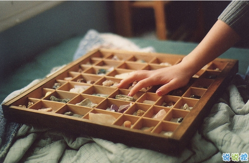

margin负值实现两端对齐,margin负值实现两端对齐,margin负值实现两端对齐,margin负值实现两端对齐,margin负值实现两端对齐,margin负值实现两端对齐,margin负值实现两端对齐,margin负值实现两端对齐,margin负值实现两端对齐,margin负值实现两端对齐
后台

1.一花凋零荒芜不了整个春天，一次挫折也荒废不了整个人生。
2.路在自己脚下，没有人可以决定你前进的方向。
3.生活里80%的痛苦来源于上班，但是我知道，如果不上班，就会有100%的痛苦来源于没钱，所以在上班和没钱，我选上班。
4.对不起，失去的就再也回不来了，我有我的高傲
5.人生匆匆，讨厌的人就一笑而过，无须怀恨在心，保持一颗童心你会发现：没有解决不了的事，也没有过不去的坎
6.不管什么年纪，别辜负最好的自己!把每一句“我不会”都改为“我可以学”，把每一句“我不敢”都改为“我一定行”，尝试总比永远不敢开始要强!
7.得不到的，就一笑而过;躲不开的，就勇往直前
8.放过自己的唯一方式只有以下九个字：该吃吃，该睡睡，爱谁谁
占浪非常非常爱韦静雯，占浪非常非常爱韦静雯，占浪非常非常爱韦静雯，占浪非常非常爱韦静雯，占浪非常非常爱韦静雯，占浪非常非常爱韦静雯，占浪非常非常爱韦静雯，占浪非常非常爱韦静雯，占浪非常非常爱韦静雯，占浪非常非常爱韦静雯，占浪非常非常爱韦静雯，占浪非常非常爱韦静雯，占浪非常非常爱韦静雯，占浪非常非常爱韦静雯，占浪非常非常爱韦静雯